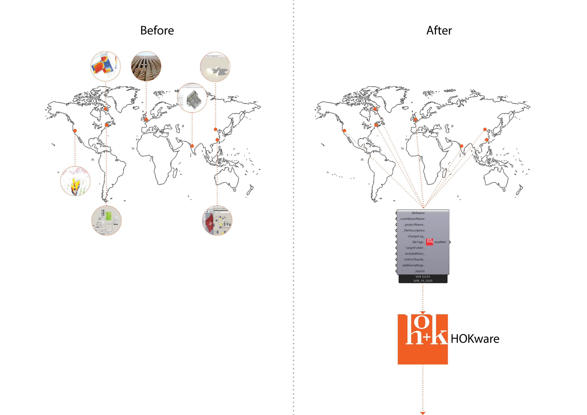

At HOK, I observed that every office has a lot of smart people that create time-saving smart workflows in the rush of the projects that other people at other offices don't know about. This creates a situation where the human intelligence of an international firm is isolated and often remains unknown to people working in distant offices. I am currently developing a platform that will enable everyone to share their workflows. The goal of this repository is to ultimately help the firm offer smart Design Analytics.
